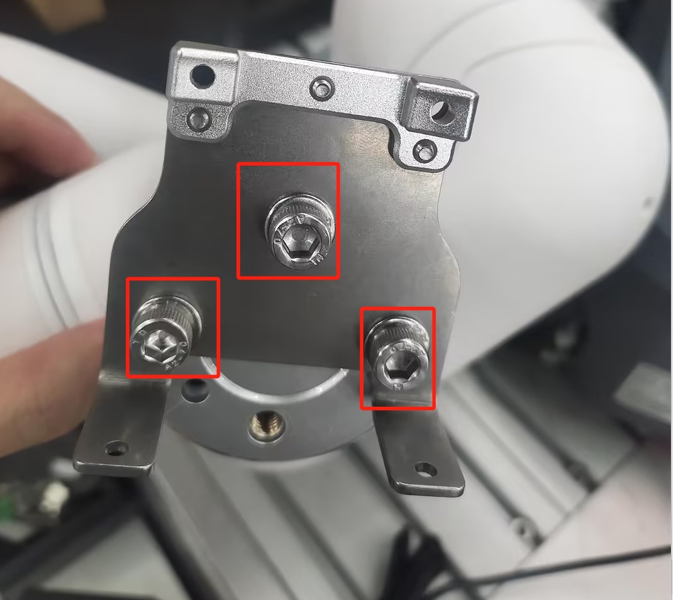
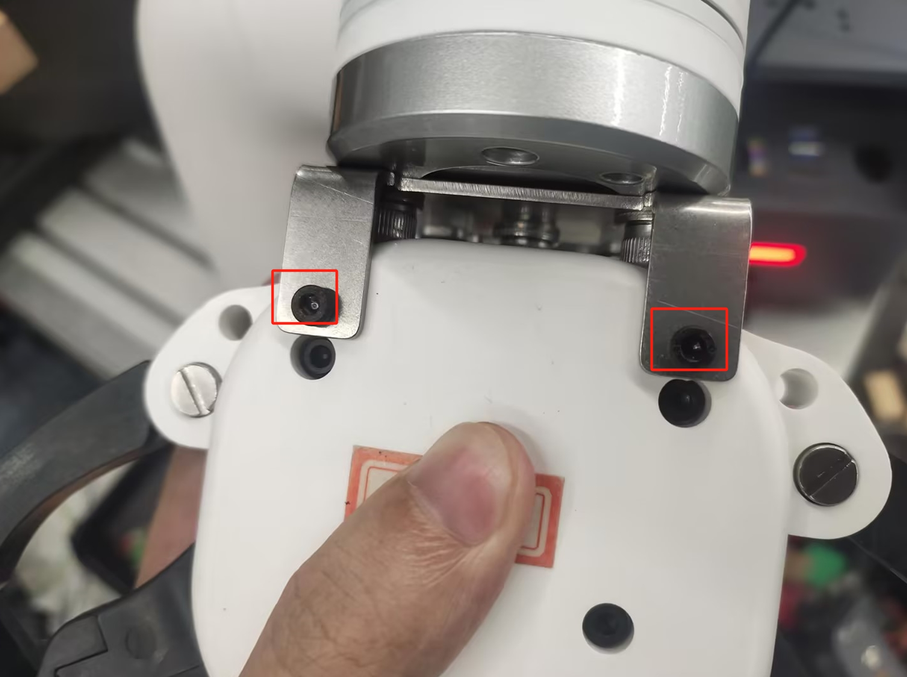

myGripper F100 力控夹爪
1 产品图片

2 规格参数说明
| 名称 | myGripper F100 力控夹爪 |
|---|---|
| 材料 | PC、PBT |
| 尺寸 | 156X106X61mm |
| 工艺技术 | 注塑 |
| 夹取范围 | 0-100毫米（默认指尖） |
| 重复性精度 | 0.5 mm |
| 使用寿命 | 30万次开合 |
| 驱动模式 | 电驱动 |
| 传动方式 | 齿轮+连杆 |
| 尺寸 | 158x105x55mm |
| 重量 | 340 g |
| 额定负载 | 500g |
| 工作电压 | 24V |
| 固定方法 | 螺丝固定 |
| 使用环境要求 | 常温常压 |
| 控制接口 | RS485/IO 控制/按键控制 |
| 适用设备 | ER myCobot 320系列,ER Mercury系列,ER myCobot Pro 600,ERmyCobot Pro 630,ER myCobot Pro 450,其他通用机器人 |
3 工作原理
在电机的驱动下，机械手的手指表面做直线往复运动，实现打开或关闭动作。通过设置夹持力矩，使工件的冲击最小，定位点可控，夹紧可控。
4 使用场景
实验操作：在科研实验中，完成试管、器皿等的抓取和移动，确保实验的安全和准确性。 教育演示：作为教学工具，帮助学生理解机器人抓取原理，培养实践能力。 物料搬运：在模拟生产线或仓储中，搬运各种规格的物料，提高工作效率。
5 安装方式
用螺丝和垫片将夹爪连接件安装到机械臂末端法兰

再用螺丝将夹爪安装在连接件上


最后用M8航空线将夹爪和机械臂就行连接

6 python控制方式
基于450末端IO 控制
基于IO控制的方式只能控制夹爪全开全合
from pymycobot import ElephantRobot
import time
mc=ElephantRobot("192.168.1.159",5001)
mc.start_client()
def gripper_open():
mc.set_digital_out(16,0)
mc.set_digital_out(17,1)
def gripper_close():
mc.set_digital_out(16,1)
mc.set_digital_out(17,0)
if __name__=="__main__":
gripper_open()
time.sleep(2)
gripper_close()
time.sleep(2)
基于USB转485模块控制
注意：使用该方式控制夹爪，需要将连接夹爪的M8航空线的一端接到USB转485模块上。即M8航空线带插头的一端连接夹爪，一端连接USB转485模块和24V电源。
接线说明：

连接夹爪端的 24V，GND, 485_A(T/R+,485+) , 485_B(T/R-,485-)共 4 根线，电源为24V直流稳压电源或是630底部IO的24V，将模块的 USB 插口插入到电脑的 USB 接口

485A 接入 485 转 USB 模块 A+;
485B 接入 485 转 USB 模块 B-;
24V 接入 24V 直流稳压电源正极/630底部IO的24V;
GND 接入 24V 直流稳压电源负极/630底部IO的GND
驱动库安装 点击下载驱动库

串口依赖库安装
在电脑终端执行下面命令，安装依赖库
pip install pyserial
API说明
get_firmware_version()
- 功能: 获取夹爪固件主版本号
- 参数: 无
- 返回:
(int)固件主版本号
get_modified_version()
- 功能: 获取夹爪固件次版本号
- 参数: 无
- 返回:
(int)固件次版本号
get_gripper_Id()
- 功能: 获取夹爪ID
- 参数: 无
- 返回:
(int)夹爪ID
get_gripper_baud()
- 功能: 获取夹爪波特率
- 参数: 无
- 返回:
(int)0-50: 1152001: 10000002: 576003: 192004: 96005: 4800
get_gripper_value()
- 功能: 获取夹爪的当前位置数据信息
- 参数: 无
- 返回:
(int)夹爪的当前位置数据
get_gripper_status()
- 功能: 获取夹爪的当前状态
- 参数: 无
- 返回:
(int)0-30: 正在运动1: 停止运动，未检测到夹到物体2: 停止运动，检测到夹到了物体3: 检测到夹到物体以后，物体掉落
get_gripper_speed()
- 功能: 获取夹爪的当前速度
- 参数: 无
- 返回:
(int)夹爪的当前速度
get_gripper_P()
- 功能: 获取夹爪PID的P值
- 参数: 无
- 返回:
(int)夹爪PID的P值
get_gripper_I()
- 功能: 获取夹爪PID的I值
- 参数: 无
- 返回:
(int)夹爪PID的I值
get_gripper_D()
- 功能: 获取夹爪PID的D值
- 参数: 无
- 返回:
(int)夹爪PID的D值
get_gripper_cw()
- 功能: 获取夹爪顺时针可运行误差
- 参数: 无
- 返回:
(int)夹爪顺时针可运行误差
get_gripper_cww()
- 功能: 获取夹爪逆时针可运行误差
- 参数: 无
- 返回:
(int)夹爪逆时针可运行误差
get_gripper_mini_pressure()
- 功能: 获取夹爪最小启动力
- 参数: 无
- 返回:
(int)夹爪最小启动力
get_gripper_io_open_value()
- 功能: 获取夹爪Io张开角度
- 参数: 无
- 返回:
(int)夹爪Io张开角度
get_gripper_io_close_value()
- 功能: 获取夹爪Io闭合角度
- 参数: 无
- 返回:
(int)获取夹爪Io闭合角度
get_gripper_queue_count()
- 功能: 获取夹爪当前队列的数据量
- 参数: 无
- 返回:
(int)夹爪当前队列的数据量
get_gripper_vir_pos()
- 功能: 获取夹爪舵机虚位数值
- 参数: 无
- 返回:
(int)夹爪舵机虚位数值
get_gripper_protection_current()
- 功能: 获取夹爪夹持电流
- 参数: 无
- 返回:
(int)夹爪夹持电流
set_gripper_Id(value)
- 功能: 设置夹爪ID号
- 参数:
value:(int)夹爪ID，取值范围1-254
- 返回:
(int)0-10: 失败1: 成功
set_gripper_baud(value)
- 功能: 设置夹爪波特率
- 参数:
value:(int)夹爪波特率，取值范围0-50: 1152001: 10000002: 576003: 192004: 96005: 4800
- 返回:
(int)0-10: 失败1: 成功
set_gripper_enable(value)
- 功能: 设置夹爪使能状态
- 参数:
value:(int)使能状态，取值范围0-10: 掉使能1: 上使能
- 返回:
(int)0-10: 失败1: 成功
set_gripper_value(value,speed)
- 功能: 设置夹爪以指定的速度转动到指定的位置
- 参数:
value:(int)位置，取值范围0-100speed:(int)速度，取值范围1-100
- 返回:
(int)0-10: 失败1: 成功
set_gripper_calibration()
- 功能: 设置夹爪零位校准
- 参数: 无
- 返回:
(int)0-10: 失败1: 成功
set_gripper_P(value)
- 功能: 设置夹爪PID的P值
- 参数:
value:(int)P值，取值范围0-254
- 返回:
(int)0-10: 失败1: 成功
set_gripper_I(value)
- 功能: 设置夹爪PID的I值
- 参数:
value:(int)I值，取值范围0-254
- 返回:
(int)0-10: 失败1: 成功
set_gripper_D(value)
- 功能: 设置夹爪PID的D值
- 参数:
value:(int)D值，取值范围0-254
- 返回:
(int)0-10: 失败1: 成功
set_gripper_cw(value)
- 功能: 设置夹爪顺时针可运行误差
- 参数:
value:(int)误差，取值范围0-16
- 返回:
(int)0-10: 失败1: 成功
set_gripper_cww(value)
- 功能: 设置夹爪逆时针可运行误差
- 参数:
value:(int)误差，取值范围0-16
- 返回:
(int)0-10: 失败1: 成功
set_gripper_mini_pressure(value)
- 功能: 设置夹爪最小启动力
- 参数:
value:(int)最小启动力，取值范围0-254
- 返回:
(int)0-10: 失败1: 成功
set_gripper_torque(value)
- 功能: 设置夹爪扭矩
- 参数:
value:(int)扭矩，取值范围0-300
- 返回:
(int)0-10: 失败1: 成功
set_gripper_output(value)
- 功能: 设置夹爪IO
参数:
value:(int)夹爪IO，取值范围0-30: out1 off,out2 off1: out1 on,out2 off2: out1 off,out2 on3: out1 on,out2 on
返回:
(int)0-10: 失败1: 成功
set_gripper_io_open_value(value)
- 功能: 设置夹爪Io张开位置
- 参数:
value:(int)位置，取值范围0-100
- 返回:
(int)0-10: 失败1: 成功
set_gripper_io_close_value(value)
- 功能: 设置夹爪Io闭合位置
- 参数:
value:(int)位置，取值范围0-100
- 返回:
(int)0-10: 失败1: 成功
set_gripper_speed(speed)
- 功能: 设置夹爪速度
- 参数:
speed:(int)速度，取值范围1-100
- 返回:
(int)0-10: 失败1: 成功
set_abs_gripper_value(value,speed)
- 功能: 设置夹爪以指定的速度转动到指定的绝对位置
- 参数:
value:(int)位置，取值范围1-100speed:(int)速度，取值范围1-100
- 返回:
(int)0-10: 失败1: 成功
set_gripper_vir_pos(value)
- 功能: 设置夹爪舵机虚位数值
- 参数:
value:(int)虚位，取值范围0-100
- 返回:
(int)0-10: 失败1: 成功
set_gripper_protection_current(value)
- 功能: 设置夹爪夹持电流
- 参数:
value:(int)虚位，取值范围1-254
- 返回:
(int)0-10: 失败1: 成功
set_gripper_pause()
- 功能: 设置夹爪暂停运动
- 备注: 只对set_abs_gripper_value()生效
- 参数: 无
- 返回:
(int)0-10: 失败1: 成功
set_gripper_resume()
- 功能: 设置夹爪恢复运动
- 备注: 只对set_abs_gripper_value()生效
- 参数: 无
- 返回:
(int)0-10: 失败1: 成功
set_gripper_stop()
- 功能: 设置夹爪停止运动，并清空消息队列
- 备注: 只对set_abs_gripper_value()生效
- 参数: 无
- 返回:
(int)0-10: 失败1: 成功
案例程序
from elegripper import Gripper
import time
if __name__=="__main__":
g=Gripper("COM27",baudrate=115200,id=14)##填写实际的串口号和波特率和夹爪ID
print("夹爪的实际ID为:",g.get_gripper_Id())
print(g.set_gripper_value(100,100))
time.sleep(2)
print(g.set_gripper_value(0,100))
time.sleep(2)